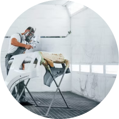
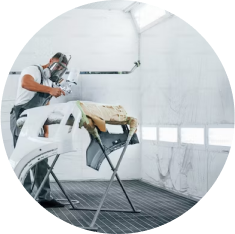

Bem Vindo!
É um prazer recebê-lo em nosso site, onde a qualidade e o cuidado se encontram para transformar o seu veículo em uma verdadeira obra-prima sobre rodas. Na nossa oficina, cada carro é tratado com a atenção e o profissionalismo que merece.
O que fazemos


- Recuperação de peças danificadas em acidentes.
- Soldagem e modelagem de partes da estrutura.
- Correção de amassados.
- Remoção de arranhões e riscos.
- Substituição de peças danificadas.

- Lixamento e nivelamento da superfície.
- Aplicação de primers e fundos para garantir uma base adequada para a pintura.
- Reparação de Rachaduras e Arranhões: Em vez de substituir todo o para-choques, a oficina pode reparar rachaduras, arranhões e outros danos menores.

- Acerto de tonalidade para obter a cor desejada.
- Aplicação de camadas de tinta para garantir uma cobertura uniforme.
- Uso de cabine de pintura para controlar a poeira e garantir um acabamento de qualidade.

- Polimento para dar brilho à pintura.
- Aplicação de verniz para proteção e durabilidade.
- Inspeção final para garantir a qualidade do trabalho.

- Troca ou reparo de para-choques.
- Recuperação de faróis e lanternas.
- Serviços de estética automotiva e personalização.
- Reparo de pequenos amassados sem a necessidade de repintura completa.
Sobre nós
Nossa oficina conta com profissionais especializados em funilaria e pintura, além de equipamentos específicos para cada etapa do processo. A qualidade do trabalho é crucial para garantir que o veículo recupere sua aparência original e, ao mesmo tempo, para garantir a segurança e durabilidade das intervenções realizadas.
 
